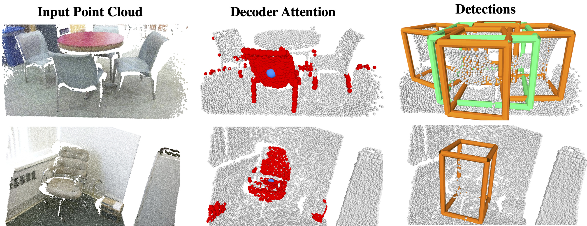
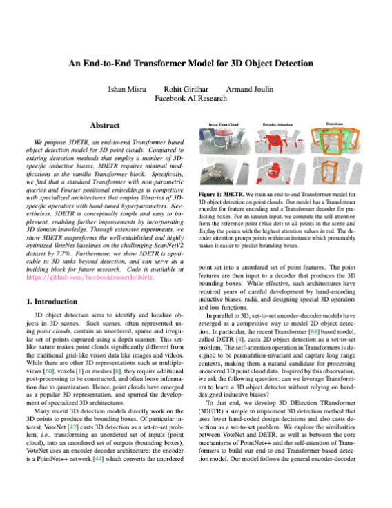

An End-to-End Transformer Model for 3D Object Detection
|  |
| We propose 3DETR, an end-to-end Transformer based object detection model for 3D point clouds. Compared to existing detection methods that employ a number of 3D specific inductive biases, 3DETR requires minimal modifications to the vanilla Transformer block. Specifically, we find that a standard Transformer with non-parametric queries and Fourier positional embeddings is competitive with specialized architectures that employ libraries of 3D specific operators with hand-tuned hyperparameters. Nevertheless, 3DETR is conceptually simple and easy to implement, enabling further improvements by incorporating 3D domain knowledge. Through extensive experiments, we show 3DETR outperforms the well-established and highly optimized VoteNet baselines on the challenging ScanNetV2 dataset by 9.5%. Furthermore, we show 3DETR is applicable to 3D tasks beyond detection, and can serve as a building block for future research. |
People
 Ishan Misra |
 Rohit Girdhar |
 Armand Joulin |
Paper
|  |
I. Misra, R. Girdhar and A. Joulin An End-to-End Transformer Model for 3D Object Detection IEEE/CVF International Conference on Computer Vision (ICCV), 2021 (Oral Presentation) [arXiv] [code/models] [BibTex] |
Results
3DETR achieves comparable or better performance to these improved baselines despite having fewer hand-coded 3D or detection specific decisions.
| Method | ScanNetV2 | SUN RGB-D | ||
|---|---|---|---|---|
| AP25 | AP50 | AP25 | AP50 | |
| BoxNet | 49.0 | 21.1 | 52.4 | 25.1 |
| 3DETR | 62.7 | 37.5 | 58.0 | 30.3 |
| VoteNet | 60.4 | 37.5 | 58.3 | 33.4 |
| 3DETR-m | 65.0 | 47.0 | 59.1 | 32.7 |
| H3DNet | 67.2 | 48.1 | 60.1 | 39.0 |
Detection results for scenes from the val set of the SUN RGB-D dataset. 3DETR does not use color information (used only for visualization) and predicts boxes from point clouds. 3DETR can detect objects even with single-view depth scans and predicts amodal boxes e.g., the full extent of the bed (top left) including objects missing in the ground truth (top right).
Acknowledgements
We thank Zaiwei Zhang for helpful discussions and Laurens van der Maaten for feedback on the paper.